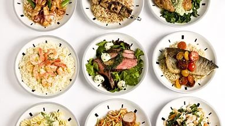

Содержание статьи
1. Главная страница
2. Преимущества ПП
3. Принципы в рамках ПП
4. ПП: меню на неделю
5. Варианты завтраков, обедов и ужинов
6. Советы напоследок
7. Невозможно НЕ похудеть
8. Вредные продукты
9. Полезные советы
|
Варианты завтраков, обедов и ужинов
Не всем сразу легко будет правильно составить свое меню
и продумать разнообразие блюд на каждый день, поэтому изучите внимательно
уже составленное расписание правильного питания на неделю и,
внося в него свои корректировки начните уже завтра правильно питаться.

- Понедельник
Завтрак: Омлет с помидором и болгарским перцем. Кофе или чай.
Второй завтрак: Йогурт, курага или арахис.
Обед: Куриный бульон с кусочком куриного мяса, рыбные котлеты и салат из капусты и огурца, заправленный оливковым маслом.
Полдник: Овсяное печенье и травяной чай.
Ужин: Греческий салат и небольшой кусочек отварной телятины. Чай с молоком.
- Вторник
Завтрак: Гречневая каша и кусочек сыра. Апельсиновый сок.
Второй завтрак: Кефир с овсяными хлопьями и сухофруктами.
Обед: Вареный картофель и тушеная рыба с овощами. Кофе с молоком.
Полдник: Банан и стакан нежирного йогурта.
Ужин: Порция мяса на гриле и фруктовый салат.
- Среда
Завтрак: Рисовая каша с кусочком вареной грудки. Зеленый чай.
Второй завтрак: Ряженка и яблоко.
Обед: Овощной суп, винегрет и кусочек рыбы. Чай или кофе.
Полдник: Сэндвич со свежим помидором.
Ужин: Салат из болгарского перца и помидора с тушёной говядиной. Любой фрукт, кроме банана. Мятный чай с медом.
- Четверг
Завтрак: Цельнозерновые макароны с кабачковой икрой и кусочек хлеба. Кофе с молоком.
Второй завтрак: Бутерброд с сыром и персиковый сок.
Обед: Овощной суп, винегрет и кусочек рыбы. Чай или кофе.
Полдник: Сэндвич со свежим помидором.
Ужин: Уха и салат из свежих овощей.
- Пятница
Завтрак: Сырники с чаем.
Второй завтрак: Запеканка из брокколи.
Обед: Щи и тушеный картофель с грибами.
Полдник: Вареное яйцо и стакан ряженки.
Ужин: Ленивые голубцы и салат из редиса.
- Суббота
Завтрак: Рисовая каша с кусочком вареной грудки. Зеленый чай.
Второй завтрак: Ряженка и яблоко.
Обед: Картофельный суп, квашенная капуста.
Полдник: Сэндвич со свежим помидором.
Ужин: Шашлык с порцией «зелёного салата», заправленного лимонным соком и маслом.
- Воскресенье
Завтрак: Пшенная каша и кусочек сыра. Сок.
Второй завтрак: Горсть орехов.
Обед: Запеченная с овощами свинина и кусочек хлеба.
Полдник: Свежие фрукты.
Ужин: Овощное рагу и йогурт.
Старайтесь не пропускать запланированные приемы пищи и следовать меню школы правильного питания.
Если же покушать вовремя не удалось, это не значит, что в следующий прием пищи нужно добавить больше продуктов и переесть, можете сделать порцию просто немного больше.
|